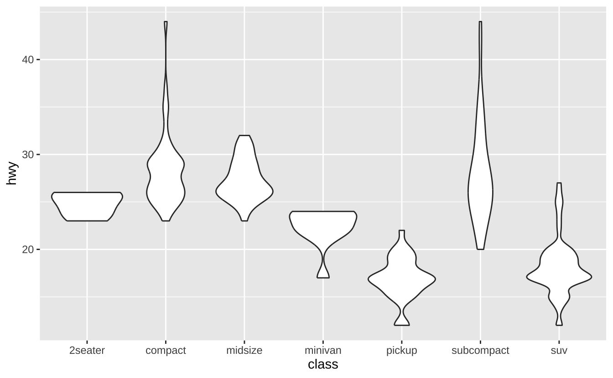

library(ggplot2)Appendix D — ggplot2 速查表
资料来源：https://rstudio.github.io/cheatsheets/
D.1 基础
ggplot2 基于图形语法理念，即所有图形都可以通过相同组件构建：数据集、坐标系和几何对象（代表数据点的视觉标记）。
要展示数值，需要将数据中的变量映射到几何对象的视觉属性（美学映射），如大小、颜色以及x和y位置。
使用以下模板构建图形：
ggplot(data = <数据>) +
<几何对象函数>(mapping = aes(<映射关系>),
stat = <统计变换>,
position = <位置调整>) +
<坐标系函数> +
<分面函数> +
<比例尺函数> +
<主题函数>数据、几何对象函数和美学映射是必需项。统计变换、位置调整以及坐标系、分面、比例尺和主题函数为可选项，会提供合理的默认值。
ggplot(data = mpg, aes(x = cty, y = hwy)): 初始化绘图，后续通过添加图层完成。每个图层添加一个几何对象函数。
ggplot(data = mpg, aes(x = cty, y = hwy)) +
geom_point()last_plot(): 返回上一次绘制的图形。
last_plot()
ggsave("plot.png", width = 5, height = 5): 将最后一次绘制的图形保存为5英寸x5英寸的”plot.png”文件。文件类型自动匹配扩展名。
ggsave("plot.png", width = 5, height = 5)D.2 美学映射
常用美学属性值：
color和fill: 字符串（"red","#RRGGBB"）linetype: 整数或字符串（0="blank",1="solid",2="dashed",3="dotted",4="dotdash",5="longdash",6="twodash"）size: 整数（点的大小和文本尺寸，单位为毫米）linewidth: 整数（线的宽度，单位为毫米）shape: 整数/形状名称或单个字符（"a"）- 形状整数/名称对应关系：0=
"square open",1="circle open",2="triangle open",3="plus",4="cross",5="diamond open",6="triangle down open",7="square cross",8="asterisk",9="diamond plus",10="circle plus",11="star",12="square plus",13="circle cross",14="square triangle",15="square",16="circle",17="triangle",18="diamond",19="circle small",20="bullet",21="circle filled",22="square filled",23="diamond filled",24="triangle filled",25="triangle down filled"
- 形状整数/名称对应关系：0=
D.3 几何对象
使用几何对象函数表示数据点，通过几何对象的美学属性映射变量。每个函数返回一个图层。
D.3.1 图形基元
a <- ggplot(economics, aes(date, unemploy))
b <- ggplot(seals, aes(x = long, y = lat))a + geom_blank()和a + expand_limits(): 确保所有图形的范围包含所有值。
a + geom_blank()b + geom_curve(aes(yend = lat + 1, xend = long + 1), curvature = 1): 绘制从(x, y)到(xend, yend)的曲线。aes()参数：x,xend,y,yend,alpha,angle,color,curvature,linetype,size
b + geom_curve(aes(yend = lat + 1, xend = long + 1), curvature = 1)a + geom_path(lineend = "butt", linejoin = "round", linemitre = 1): 按数据出现顺序连接观测点。aes()参数：x,y,alpha,color,group,linetype,size
a + geom_path(lineend = "butt", linejoin = "round", linemitre = 1)
a + geom_polygon(aes(alpha = 50)): 将点连接成多边形。aes()参数：x,y,alpha,color,fill,group,subgroup,linetype,size
a + geom_polygon(aes(alpha = 50))b + geom_rect(aes(xmin = long, ymin = lat, xmax = long + 1, ymax = lat + 1)): 通过四个角点绘制矩形。aes()参数：xmax,xmin,ymax,ymin,alpha,color,fill,linetype,size
b + geom_rect(aes(xmin = long, ymin = lat, xmax = long + 1, ymax = lat + 1))a + geom_ribbon(aes(ymin = unemploy - 900, ymax = unemploy + 900)): 为每个x绘制从ymin到ymax的区间。aes()参数：x,ymax,ymin,alpha,color,fill,group,linetype,size
a + geom_ribbon(aes(ymin = unemploy - 900, ymax = unemploy + 900))D.3.1.1 线段
常用美学属性：x, y, alpha, color, linetype, size, linewidth
b + geom_abline(aes(intercept = 0, slope = 1)): 绘制指定斜率和截距的参考线
b + geom_abline(aes(intercept = 0, slope = 1))b + geom_hline(aes(yintercept = lat)): 绘制水平参考线
b + geom_hline(aes(yintercept = lat))b + geom_vline(aes(xintercept = long)): 绘制垂直参考线
b + geom_vline(aes(xintercept = long))b + geom_segment(aes(yend = lat + 1, xend = long + 1)): 绘制两点间直线
b + geom_segment(aes(yend = lat + 1, xend = long + 1))b + geom_spoke(aes(angle = 1:1155, radius = 1)): 使用极坐标绘制线段
b + geom_spoke(aes(angle = 1:1155, radius = 1))D.3.2 单变量-连续型
c <- ggplot(mpg, aes(hwy))
c2 <- ggplot(mpg)c + geom_area(stat = "bin"): 面积图
c + geom_area(stat = "bin")c + geom_density(kernel = "gaussian"): 核密度估计曲线
c + geom_density(kernel = "gaussian")c + geom_dotplot(): 点图
c + geom_dotplot()c + geom_freqpoly(): 频率多边形
c + geom_freqpoly()c + geom_histogram(binwidth = 5): 直方图
c + geom_histogram(binwidth = 5)c2 + geom_qq(aes(sample = hwy)): Q-Q图
c2 + geom_qq(aes(sample = hwy))D.3.3 单变量-离散型
d <- ggplot(mpg, aes(fl))d + geom_bar(): 条形图
d + geom_bar()D.3.4 双变量-连续型
e <- ggplot(mpg, aes(cty, hwy))e + geom_label(aes(label = cty), nudge_x = 1, nudge_y = 1): 带背景的文字标注
e + geom_label(aes(label = cty), nudge_x = 1, nudge_y = 1)e + geom_point(): 散点图
e + geom_point()
e + geom_quantile(): 分位数回归线
e + geom_quantile()e + geom_rug(sides = "bl"): 地毯图
e + geom_rug(sides = "bl")e + geom_smooth(method = lm): 平滑条件均值
e + geom_smooth(method = lm)e + geom_text(aes(label = cty), nudge_x = 1, nudge_y = 1): 文字标注
e + geom_text(aes(label = cty), nudge_x = 1, nudge_y = 1)D.3.5 双变量-离散型与连续型
f <- ggplot(mpg, aes(class, hwy))f + geom_col(): 柱状图
f + geom_col()f + geom_boxplot(): 箱线图
f + geom_boxplot()f + geom_dotplot(binaxis ="y", stackdir = "center"): 点图
f + geom_dotplot(binaxis ="y", stackdir = "center")f + geom_violin(scale = "area"): 小提琴图
f + geom_violin(scale = "area")
D.3.6 双变量-离散型
g <- ggplot(diamonds, aes(cut, color))g + geom_count(): 计数点图
g + geom_count()e + geom_jitter(height = 2, width = 2): 抖动点图
e + geom_jitter(height = 2, width = 2)D.3.7 双变量-连续型双变量分布
h <- ggplot(diamonds, aes(carat, price))h + geom_bin2d(binwidth = c(0.25, 500)): 二维分箱热图
h + geom_bin2d(binwidth = c(0.25, 500))h + geom_density_2d(): 二维核密度等高线
h + geom_density_2d()h + geom_hex(): 六边形分箱热图
h + geom_hex()D.3.8 双变量-连续型函数
i <- ggplot(economics, aes(date, unemploy))i + geom_area(): 面积图
i + geom_area()i + geom_line(): 折线图
i + geom_line()i + geom_step(direction = "hv"): 阶梯图
i + geom_step(direction = "hv")D.3.9 双变量-误差可视化
df <- data.frame(grp = c("A", "B"), fit = 4:5, se = 1:2)
j <- ggplot(df, aes(grp, fit, ymin = fit - se, ymax = fit + se))j + geom_crossbar(fatten = 2): 交叉条
j + geom_crossbar(fatten = 2)j + geom_errorbar(): 误差条
j + geom_errorbar()j + geom_linerange(): 线条范围
j + geom_linerange()j + geom_pointrange(): 点范围
j + geom_pointrange()D.3.10 双变量-地图
根据数据中的简单要素绘制几何对象：
nc <- sf::st_read(system.file("shape/nc.shp", package = "sf"))Reading layer `nc' from data source
`/Users/gaoch/Library/Caches/org.R-project.R/R/renv/cache/v5/macos/R-4.4/aarch64-apple-darwin20/sf/1.0-19/fe02eec2f6b3ba0e24afe83d5ccfb528/sf/shape/nc.shp'
using driver `ESRI Shapefile'
Simple feature collection with 100 features and 14 fields
Geometry type: MULTIPOLYGON
Dimension: XY
Bounding box: xmin: -84.32385 ymin: 33.88199 xmax: -75.45698 ymax: 36.58965
Geodetic CRS: NAD27ggplot(nc) +
geom_sf(aes(fill = AREA))D.3.11 三变量
seals$z <- with(seals, sqrt(delta_long^2 + delta_lat^2))
l <- ggplot(seals, aes(long, lat))l + geom_contour(aes(z = z)): 等高线图
l + geom_contour(aes(z = z))l + geom_contour_filled(aes(fill = z)): 填充等高线图
l + geom_contour_filled(aes(z = z))l + geom_raster(aes(fill = z), hjust = 0.5, vjust = 0.5, interpolate = FALSE): 栅格图
l + geom_raster(aes(fill = z), hjust = 0.5, vjust = 0.5, interpolate = FALSE)l + geom_tile(aes(fill = z)): 瓦片图
l + geom_tile(aes(fill = z))D.4 统计变换
通过统计变换构建图层的另一种方式。统计变换会生成新的绘图变量（如计数、比例）。使用after_stat(变量名)语法将统计变量映射到美学属性。
i + stat_density_2d(aes(fill = after_stat(level)), geom = "polygon")D.5 比例尺
使用scales包覆盖默认设置。比例尺将数据值映射到美学属性的视觉值。
n <- d + geom_bar(aes(fill = fl))
n + scale_fill_manual(
values = c("skyblue", "royalblue", "blue", "navy"),
limits = c("d", "e", "p", "r"),
breaks =c("d", "e", "p", "r"),
name = "fuel",
labels = c("D", "E", "P", "R")
)D.6 坐标系
u <- d + geom_bar()u + coord_cartesian(xlim = c(0, 5)): 笛卡尔坐标系
u + coord_cartesian(xlim = c(0, 5))u + coord_fixed(ratio = 1/2): 固定比例坐标系
u + coord_fixed(ratio = 1/2)u + coord_polar(theta = "x", direction = 1): 极坐标系
u + coord_polar(theta = "x", direction = 1)D.7 位置调整
位置调整决定如何排列重叠的几何对象。
s <- ggplot(mpg, aes(fl, fill = drv))s + geom_bar(position = "dodge"): 并列排列
s + geom_bar(position = "dodge")s + geom_bar(position = "fill"): 堆叠标准化
s + geom_bar(position = "fill")D.8 主题
u + theme_bw(): 白底网格主题
u + theme_bw()u + theme_classic(): 经典无网格主题
u + theme_classic()D.9 分面
分面根据离散变量值将图形划分为子图。
t <- ggplot(mpg, aes(cty, hwy)) + geom_point()t + facet_grid(. ~ fl): 列分面
t + facet_grid(. ~ fl)t + facet_wrap(~ fl): 环绕分面
t + facet_wrap(~ fl)D.10 标签与图例
使用labs()添加图形标签：
t + labs(x = "城市油耗", y = "高速油耗",
title = "油耗关系图",
subtitle = "城市与高速公路油耗对比",
caption = "数据来源: mpg数据集")D.11 缩放
t + coord_cartesian(xlim = c(0, 100), ylim = c(10,20)): 无损缩放
t + coord_cartesian(xlim = c(0, 30), ylim = c(10,40))